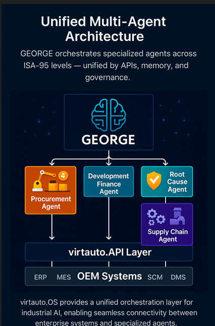

So thinks our factory — before it acts.
A modular platform that automates engineering, production and after-sales processes
with Multi-Agent Orchestration — from CI/CD pipelines to the shop floor.
Explore the Industry Model and see Doorline as the first real instance:
how perception, world-model updates, simulation, governance, execution — and resilience — work together.
Platform Architecture
Scalable, observable and agent-driven.

MVP Showcases
Energy Optimization
Simulated Automotive production energy optimization powered by virtauto decision governance.
Open Showcase →virtauto Knowledge Base
A curated archive of Andreas Braun’s Medium articles exploring Agentic AI, Multi-Agent Systems, and Industrial Transformation. This collection documents the evolution of the ideas behind virtauto.de and virtauto.OS — from digital autonomy to industrial intelligence.
Fusion Strategy & Transformation
- Why Multi-Cloud Strategy is the Future of Automotive Production
- The Digital Transformation of the Automotive Industry – A Holistic Approach
- Why Digital-First Strategies are a Matter of Survival for Automotive OEMs
- From PEP to Agile – How OEMs Can Shift to Software-Centric Development
Multi-Agent Systems & virtauto Vision
- Multi-Agent Systems as Operating System for Automotive Value Creation
- Agentic AI Automotive Startup – MAS as the OS for Value Creation
- From Parallel Agents to Multi-Agent Systems – Building the Digital Brain
- Connected Intelligence – Cognitive Digital Twins and MAS
Agent of the Week Series
- GEORGE – The Orchestrator
- Root Cause Agent
- Supply Chain Agent
- Procurement Agent
- Quality Agent
- Energy Optimization Agent
- Safety & Ethics Guardian Agent
- Predictive Maintenance Agent
- Consistency Agent
Industrial Tech Chronicles
- #1 AWS in Manufacturing & Automotive
- #2 IBM – The Cognitive Enterprise
- #3 Microsoft – The Cloud as Manufacturing’s New Shop Floor
- #4 Siemens – From Hardware Giant to the OS of Industry 5.0
- #5 NVIDIA – The GPU as the Engine of the Industrial Metaverse
- #6 Intel – From Microprocessors to Digital Transformation at Scale
- #7 Honeywell – The Innovation Hub at the Heart of Industry
- #8 General Electric – The Rise, Fall, and Digital Rebirth of an Icon
- #9 The Kodak Syndrome – When Courage Fails
- #10 Walmart – The Data-Driven Retail Ecosystem